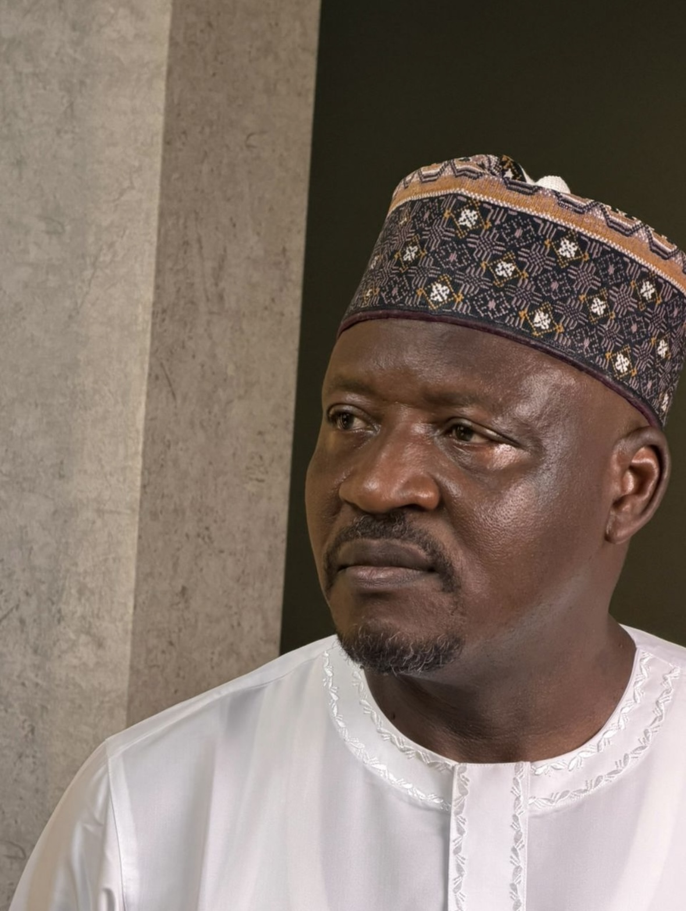

About
Suleiman Abdurrahman, popularly known as Kawu Sumaila (OFR), was born on 3 March 1968 in Sumaila Village, Kano State, to Alhaji Abdurrahman Tadu and Hajiya Maryam Muhammad. He is a Nigerian politician, businessman and school proprietor.
He represents Kano South Senatorial District at the 10th Nigerian National Assembly. Before his election to the Senate, he served three consecutive terms in the House of Representatives for Sumaila/Takai Federal Constituency, where he was Deputy Minority Leader of the 6th and 7th Houses.
Between 2015 and 2019 he served as Senior Special Assistant to President Muhammadu Buhari on House of Representatives Matters. In 2012 he was conferred with the national honour of the Order of the Federal Republic (OFR) by President Goodluck Jonathan, and in 2006 he received the traditional title of Turakin Sumaila from the Kano Emirate.
Education
Career milestones
Honours
Order of the Federal Republic (OFR), 2012 · Turakin Sumaila (traditional title conferred by the Kano Emirate), 2006.